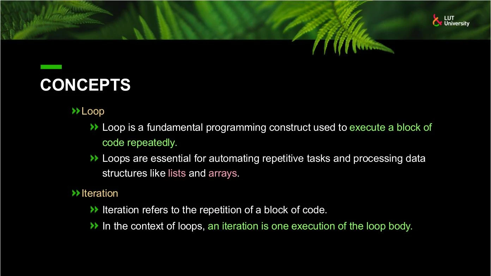
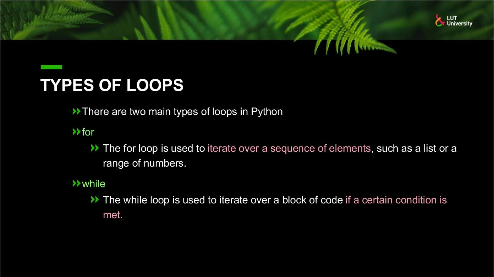
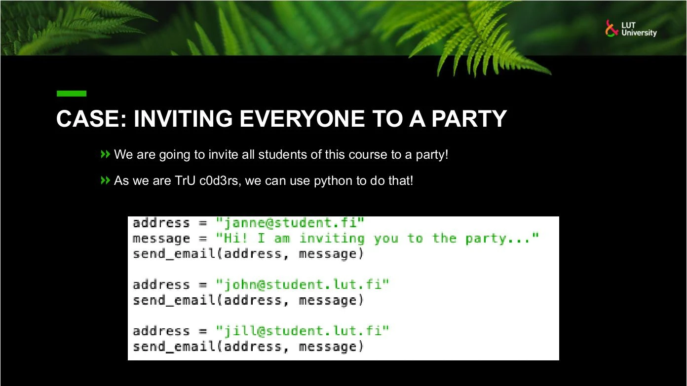
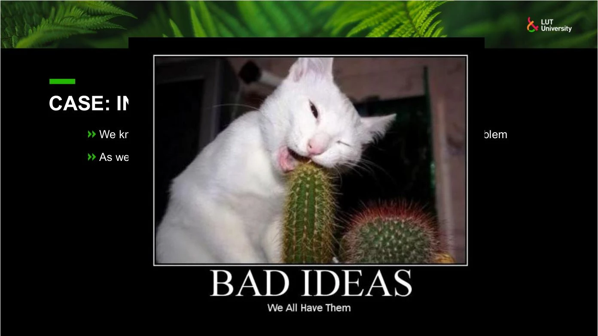

CT60A0250 编程基础 · 第 05 / 18 讲
⑤ 循环与迭代
Loops and Iteration
所属章节：第 4 章 循环
资料来源 · 7 项 / 已附 0 项
Chapter 4 - Part 1 - Loop Theory.pdf未附原文件Chapter 4 - Part 2 - For Loop.pdf未附原文件Chapter 4 - Part 3 - While Loop.pdf未附原文件Chapter 4 - Part 4 - Controlling Loops.pdf未附原文件Chapter 4 - Part 5 - Nested For.pdf未附原文件10_Chapter 4_1_Chapter 4 Code Examples_L4E1.py未附原文件10_Chapter 4_1_Chapter 4 Code Examples_L4E7.py未附原文件
未附文件仅列原始名称；版本与核对日期由维护者登记。
本节定位
上一讲让程序学会了「分岔」，这一讲让它学会「绕圈」：同一段代码重复执行，直到把一整个列表处理完、或者等到某个条件成立。循环是这门课后面所有程序的主干——菜单、统计、文件逐行处理、项目作业，全靠它。
结构上，循环的判断条件与第 4 讲的 if 用的是同一套布尔表达式；区别只在于 if 走一次，while 走很多次。下一讲把这些重复的代码块打包成函数。
学完本讲你应当能够：
- 说清
for与while各自适合什么场景，并按场景选对 - 用
range(start, stop, step)生成任意等差数列，并解释为什么不含 stop - 写出不会死循环的
while：初始化、条件、更新三件套齐全 - 用
break提前退出、用continue跳过本轮，并说明二者差别 - 写出两层嵌套循环处理二维结构，并算出总执行次数
- 把求和、求积、计数、找极值四类问题套进对应模板
一、重复这件事：loop 与 iteration
课件给出的场景很具体：要把这门课所有学生的邮箱逐个发一遍邀请（Part 1 p3–p6）。手写一条语句发一个人，人数一多就无法维护；循环把「同一件事做 N 次」压成一小段代码。
两个术语必须分清：循环（loop）是「重复执行一段代码」的结构；迭代（iteration）是其中一次执行（Part 1 p7）。说「这个循环跑了 5 次迭代」，意思是循环体执行了 5 遍。
| 术语 | 含义 | 说明 |
|---|---|---|
| loop | 循环 | A construct that repeats a block of code. |
| iteration | 迭代 / 一次循环 | One execution of the loop body. |
| loop body | 循环体 | The indented statements inside the loop. |
| loop variable | 循环变量 | The variable that takes each item of the sequence in turn. |
| iterable | 可迭代对象 | Anything a for loop can walk through: a string, a list, a range. |
| infinite loop | 死循环 | A loop whose condition never becomes False. |
Python 只有两种循环（Part 1 p8）：for 用来遍历一个已知序列，while 用来在条件成立时反复执行。选哪一种，取决于你「知不知道要做多少次」。
二、for 循环：遍历序列
2.1 执行流程
fork 的语义是：把序列里的元素依次取出来，每次取一个赋给循环变量，然后执行一遍循环体（Part 2 p2）。序列走完，循环结束。
for <variable> in <sequence>:
<do something>sequence 可以是字符串、列表、range() 产生的数字序列，或任何可迭代对象。for 行末的冒号与循环体的缩进，规则与第 4 讲的 if 完全一样。
for i in [10, 20, 30]:
print("i is", i)
print("loop finished")i is 10
i is 20
i is 30
loop finished注意最后一行没有缩进，它在循环结束后执行一次。循环变量 i 在循环结束后仍然存在，值是最后一次赋的值（这里是 30）——这是 Python 的行为，不要依赖它，但读别人代码时要认得。
2.2 遍历字符串
字符串是字符的序列，所以可以直接被 for 遍历（Part 2 p4）。L4E1 用它提取一句话里所有大写字母，把 Central Processing Unit 变成 CPU：
sentence = input("Enter a sentence with capital letters: ")
print("The capital letters of", sentence, "are:")
for character in sentence:
if character.isupper():
print(character, end="")输入 Central Processing Unit，输出 The capital letters of Central Processing Unit are: 换行后紧跟 CPU。end="" 让字母连在一起而不是各占一行（第 3 讲）。
2.3 遍历列表
L4E2 的对比很直观：手写 print(values[1])、print(values[4]) 只能覆盖几个元素，换一个列表就得重写；for 一次解决（Part 2 p5）。
values = [1, 2, 3, 7, 44, 98, 360]
for val in values:
print(val)循环变量 val 每次拿到的是元素本身，不是下标。需要下标时用第 8 讲的 range(len(...)) 或 enumerate()。
2.4 空序列与「零次迭代」
for x in []:
print("never printed")
print("done")done空列表、空字符串、range(0) 都让循环体一次也不执行。这不是错误，而是「没有东西可做」的正常情况——统计类程序要考虑这种输入。
三、range()：生成数字序列
3.1 三种参数形式
range() 最多接受三个参数：起点、终点、步长（Part 2 p6）。起点默认 0，步长默认 1，终点必须给。
| 写法 | 产生的数字 | 迭代次数 |
|---|---|---|
range(5) | 0, 1, 2, 3, 4 | 5 |
range(1, 5) | 1, 2, 3, 4 | 4 |
range(1, 10, 2) | 1, 3, 5, 7, 9 | 5 |
range(11, 0, -2) | 11, 9, 7, 5, 3, 1 | 6 |
range(0) | （空） | 0 |
3.2 不含 stop：off-by-one 的根源
range(start, stop) 和切片一样含头不含尾。想累加 1 到 100，必须写 range(1, 101)（Part 2 p7 的示例正是 range(0, 10) 给出 0–9）：
seq_sum = 0
for i in range(1, 100 + 1):
seq_sum = seq_sum + i
print("1 + 2 + ... + 100 =", seq_sum)1 + 2 + ... + 100 = 5050写 100 + 1 而不是硬写 101，是为了让读代码的人一眼看出「到 100 为止」。
3.3 负步长
seq_mul = 1
for i in range(11, 0, -2):
seq_mul = seq_mul * i
print("11 * 9 * ... * 1 =", seq_mul)11 * 9 * ... * 1 = 10395步长为负时起点必须大于终点，否则一次都不执行（例如 range(0, 11, -2) 是空序列）。
3.4 range 不是列表
r = range(3)
print(r)
print(list(r))range(0, 3)
[0, 1, 2]range 对象是惰性序列：它不把数字全部装进内存，而是按需产生。所以 print(r) 只显示 range(0, 3)；要看到内容得用第 8 讲的 list() 转换。
四、while 循环：条件成立就继续
4.1 执行流程
先判断，再执行（Part 3 p2–p4）：条件为真执行循环体，执行完再回来判断；条件为假立刻退出。如果一开始条件就为假，循环体一次都不执行。
while <expression>:
<do something>count = 3
while count > 0:
print("count =", count)
count = count - 1
print("liftoff")count = 3
count = 2
count = 1
liftoff4.2 三件套：初始化、条件、更新
写 while 必须同时安排好三件事，缺一件就是死循环：
- 初始化：在循环之前给控制变量一个初值
- 条件：写出「什么时候继续」的布尔表达式
- 更新：在循环体内改变控制变量，使它最终能让条件变假
下面这段就是典型的死循环——条件永远为真，因为循环体里没有改变 count：
count = 3
while count > 0:
print("forever")真实运行会刷屏，需要 Ctrl+C 中断，Python 抛 KeyboardInterrupt（第 11 讲）。
4.3 while True + break
另一种常见形态是「先无限循环，满足条件时 break 跳出」。条件复杂、退出点分散时，这比把所有条件塞进一个 while 表达式更清楚（Part 4 p3 的例子正是这个结构）：
while True:
n = int(input("Please enter a number: "))
if n % 13 == 0:
print(n, "is divisible by 13")
break这段程序不断要用户输入，直到输入一个能被 13 整除的数才停。
4.4 用 while 做输入驱动的循环
L4E4 用哨兵值（sentinel）结束循环：用户输入 -1 表示退出，其余输入按及格线给结论（Part 3 p5–p6）。
score = ""
while score != "-1":
score = input("Please input score OR -1 to quit: ")
if score == "-1":
print("Bye!")
elif float(score) >= 50:
print("Pass")
else:
print("Reject")要点：score 必须先在循环外初始化成 ""，否则第一次判断时变量还不存在（NameError）；比较用字符串 "-1"，因为 input() 返回字符串，若先 float() 再比较就会在输入 -1 时也被当成数字。
什么时候用 while 而不是 for？判断标准只有一条：循环次数事先未知（等用户输入、等某个条件成立）就用 while；要遍历一个已知序列就用 for。
五、break 与 continue
两个语句都只能写在循环里，作用完全不同（Part 4 p2–p6）：
| 语句 | 作用 | 之后的代码 | 典型场景 |
|---|---|---|---|
break | 立刻结束整个循环 | 循环体剩余部分不执行，循环外继续 | 找到了要找的东西，不必再找 |
continue | 结束本轮，进入下一轮 | 本轮剩余部分跳过 | 跳过不符合条件的元素 |
L4E6 用 continue 打印列表里的偶数：遇到奇数就跳过本轮，不执行后面的 print。
list_numbers = list(range(2, 65, 3))
print("List:", list_numbers)
for x in list_numbers:
if x % 2 != 0:
continue
print(x, end=", ")List: [2, 5, 8, 11, 14, 17, 20, 23, 26, 29, 32, 35, 38, 41, 44, 47, 50, 53, 56, 59, 62]
2, 8, 14, 20, 26, 32, 38, 44, 50, 56, 62, 注意输出末尾多了一个逗号与空格——这是「最后一个元素也照样加分隔符」的经典小瑕疵，正式输出时要单独处理。
while 循环里如果 i = i + 1 写在 continue 之后，被 continue 跳过的那一轮就不会更新 i，条件永远为真。规则：更新语句放在循环体最前面，或改用 for。break 只结束它所在的那一层（Part 4 p2）。要一次跳出两层，得用标志变量或在函数里 return（第 6 讲）。六、嵌套循环
循环体里再写一个循环，就是嵌套（Part 5 p2）。它用于「二维」的问题：矩阵的每个元素、表格的每一行每一列、图形的每一行每一列。外层每走一步，内层完整走一遍，所以总执行次数是两层次数相乘。
L4E7 的乘法表是最小完整例子：外层 i 控制行，内层 j 只走到 i，于是第 i 行有 i 个式子（Part 5 p6）。
for i in range(1, 10):
for j in range(1, i + 1):
print(str(i) + "*" + str(j) + "=" + str(i * j), end="\t")
print()1*1=1
2*1=2 2*2=4
3*1=3 3*2=6 3*3=9
...
9*1=9 9*2=18 ... 9*9=81内层的 print() 带 end="\t" 让同一行的式子用制表符隔开；外层的 print() 不带参数，只输出一个换行，负责「换行」。这个「内层不换行、外层换行」的搭配是打印二维结构的标准写法。
七、四种累积模式
绝大多数循环题都能归到这四种模式之一，认出模式就能直接套模板：
| 模式 | 初始化 | 循环体 | 典型题 |
|---|---|---|---|
| 累加求和 | total = 0 | total = total + x | 求和、求平均 |
| 累乘 | prod = 1 | prod = prod * x | 阶乘、连乘 |
| 计数 | count = 0 | count = count + 1（满足条件时） | 统计元音、统计及格人数 |
| 找极值 | best = 第一个元素 | if x > best: best = x | 最大值、最小值 |
累加与累乘的初值不能写错：求和从 0 开始，求积从 1 开始。prod = 0 会让整个乘积永远是 0 而毫无报错——这类错误只能靠想清楚语义来避免。
numbers = [4, 9, 2, 7]
total = 0
biggest = numbers[0]
for x in numbers:
total = total + x
if x > biggest:
biggest = x
print("sum:", total, "max:", biggest, "avg:", total / len(numbers))sum: 22 max: 9 avg: 5.5八、常见错误与调试
while x != 10 而 x 每次加 2 会跳过 10）。先读三件套，再看条件能否被打破。range(1, 10) 只到 9；range(10) 是 0–9。打印首尾值确认：print(list(range(1, 10)))。for x in L: L.remove(x) 会漏掉元素，因为删除后下标整体前移，而循环变量还在按旧位置走。要删除请遍历副本 for x in L[:]，或新建一个列表。0.1 + 0.2 != 0.3）。累加金额时最后 round(total, 2)，比较时用 abs(a - b) < 1e-9。range(start, stop) 和切片一样含头不含尾，累加 1 到 100 要写 range(1, 101)，少写就是 off-by-one。while 三件套缺一就死循环：循环外初始化、写清条件、循环体内更新；continue 放在更新语句前会让那轮不更新，同样卡死。break 只跳出最内层，退出两层要靠标志变量或函数 return。
四类累积模式覆盖大多数循环题：求和初值 0、累乘初值 1、计数 +1、找极值先取第一个元素。prod = 0 让乘积永远为 0 且不报错，只能靠想清语义避免。嵌套循环次数是两层次数相乘，三层就是立方——1000 个元素做十亿次操作，出现循环套循环套循环基本说明思路错了。
原版图页（源 PDF 插图页）







| English | 中文 | 说明 / 例句 |
|---|---|---|
| loop | 循环 | A block of code that repeats. |
| iteration | 迭代 | One pass through the loop body. |
| for loop | for 循环 | Iterates over the items of a sequence. |
| while loop | while 循环 | Repeats while a condition stays true. |
| range() | 数字序列函数 | range(1, 101) yields 1 to 100, stop excluded. |
| loop variable | 循环变量 | The variable bound to the current item. |
| break | 跳出循环 | Ends the whole loop immediately. |
| continue | 跳过本轮 | Skips the rest of this iteration. |
| nested loop | 嵌套循环 | A loop inside another loop; counts multiply. |
| accumulator | 累加器 | total = 0 before the loop, total += x inside. |
| sentinel value | 哨兵值 | A special input such as -1 that ends the loop. |
| infinite loop | 死循环 | The condition never becomes False; stop with Ctrl+C. |
| off-by-one | 差一错误 | range(1, 10) stops at 9, not 10. |
两个都是累积模式：求和初值 0，求积初值 1。步长为 −2 的 range 直接给出 11, 9, 7, 5, 3, 1。
seq_sum = 0
for i in range(1, 101):
seq_sum = seq_sum + i
print("sum 1..100 =", seq_sum)
seq_mul = 1
for i in range(11, 0, -2):
seq_mul = seq_mul * i
print("11*9*...*1 =", seq_mul)输出：
sum 1..100 = 5050
11*9*...*1 = 10395逐点解释：range(1, 101) 的最后一个值是 100（含头不含尾）；range(11, 0, -2) 依次给 11、9、7、5、3、1，走到 −1 时已越过终点 0 而停止。
思路：用 % 10 取出末位，用 // 10 把它去掉，循环直到数变成 0。这是「拆分数字」的标准套路，循环次数取决于位数，所以用 while。
n = int(input("Enter a positive integer: "))
total = 0
while n > 0:
digit = n % 10
total = total + digit
n = n // 10
print("Digit sum:", total)输入 12345，输出 Digit sum: 15。
逐轮追踪：n=12345 → digit=5，n=1234；→ digit=4，n=123；→ 3，12；→ 2，1；→ 1，0。此时条件 n > 0 为假，退出。注意循环体里三步的顺序：先取位、再加、最后缩小 n，缺任何一步都会死循环或算错。
思路：对每个 n，用 2 到 n−1 逐个试除；一旦找到因子就把标志设为「不是质数」并 break，不必再试。
for n in range(2, 51):
is_prime = True
for d in range(2, n):
if n % d == 0:
is_prime = False
break
if is_prime:
print(n, end=" ")输出：
2 3 5 7 11 13 17 19 23 29 31 37 41 43 47解释：外层遍历候选数，内层做试除；break 只跳出内层，外层的 if is_prime 照常判断。标志变量 is_prime 每轮都要在外层循环体内重置为 True，写在循环外就只会记住第一次的结果——这是嵌套 + 标志组合最常见的错误。
这是「哨兵 + 计数 + 累加」的组合，也是项目作业里菜单循环的雏形。
total = 0
count = 0
passed = 0
while True:
score = float(input("Score (-1 to quit): "))
if score == -1:
break
total = total + score
count = count + 1
if score >= 50:
passed = passed + 1
if count > 0:
print("Average:", round(total / count, 2))
print("Passed:", passed)
else:
print("No scores given")输入 80、45、-1，输出 Average: 62.5 与 Passed: 1。
解释：while True 先进入，靠 break 退出；count > 0 的判断避免除零（第 11 讲的 ZeroDivisionError 在这里是真实风险）；及格人数用「计数模式」，条件写在累加之后。
- 打印 1 到 30 之间所有能被 3 整除但不能被 6 整除的数。
- 求
n!（n 由用户输入），并说明循环变量从哪里开始、到哪里结束。 - 统计一个字符串里元音字母（a e i o u）的个数，大小写都要算。
- 打印 5 行「金字塔」：
* *** ***** ******* ********* - 反复读入整数，直到读入 0；输出其中最大值与最小值（不考虑 0）。
答案与思路
1. for n in range(1, 31): if n % 3 == 0 and n % 6 != 0: print(n)。也可以直接用 range(3, 31, 3) 再剔除 6 的倍数。关键是上界写 31。
2. result = 1，for i in range(1, n + 1): result = result * i。若写 range(n) 会从 0 开始，结果恒为 0——这是累乘初值与起点双重踩坑。n=0 时按定义为 1，恰好被 range(1, 1) 的空序列正确处理。
3. count = 0，for ch in s: if ch.lower() in "aeiou": count += 1。用 lower() 统一大小写，比写两遍 in "aeiouAEIOU" 更简洁；in 判断子串是否出现在字符串里，是第 2 讲字符串方法的一部分。
4. 外层 for row in range(1, 6)，先打印 " " * (5 - row) 个空格，再打印 "*" * (2 * row - 1) 个星号，最后 print() 换行。规律来自行号：第 row 行有 2row−1 个星、5−row 个前导空格。
5. 用 while True 读入，读 0 就 break；第一个非零数同时初始化 maximum 与 minimum，之后每读一个就更新两个值。若用一个不可能的大数当初始最大值（如 10**9），遇到更大输入时会错——用「第一个元素初始化」才安全。
for 与 while 的选择依据；range() 三种参数与「不含 stop」；break 与 continue 的区别；嵌套循环的总执行次数。while 里忘记更新控制变量，或更新语句被 continue 跳过。写循环先写下三件套，再写循环体。range(1, 10) 是 1–9；要 10 得写 range(1, 11)。负数步长时起点必须大于终点。range(0, 10, -1) 是空序列，不报错，容易误判成「程序没跑」。is_prime = True 要放在外层循环体内；求总和时 total = 0 要放在所有循环之外。for 循环的循环变量在循环结束后仍保留最后的值，写测试时可以利用这一点。操作清单
写循环之前先确认四件事
- 要重复的是哪一段？把它写成缩进的循环体
- 循环次数已知还是未知？已知用
for，未知用while - 控制变量/累加器的初值是多少？在哪一层初始化？
- 循环什么时候结束？把结束条件写成能判真假的表达式，并确认它最终会成立
写完后的自检
- 打印首尾值确认边界：
print(list(range(...))) while的更新语句在continue之前break只跳出最内层，确认这是你要的效果- 嵌套循环的内层依赖外层变量时，内层次数随外层变化
- 累乘初值是 1，累加初值是 0，找极值用第一个元素初始化
| 源文件 | 页码 | 覆盖知识点 |
|---|---|---|
| Chapter 4 - Part 1 - Loop Theory.pdf | p2–p8 | 重复的动机、party 邀请案例、loop 与 iteration 的定义、两种循环的分工 |
| Chapter 4 - Part 2 - For Loop.pdf | p2–p8 | for 执行流程、遍历字符串/列表、range() 三参数、range(0, 10) 示例 |
| Chapter 4 - Part 3 - While Loop.pdf | p2–p6 | while 先判后执行、条件重估、输入驱动循环、哨兵 −1 示例 |
| Chapter 4 - Part 4 - Controlling Loops.pdf | p2–p6 | break 终止整个循环、continue 跳过本轮、两者流程图 |
| Chapter 4 - Part 5 - Nested For.pdf | p2–p7 | 嵌套循环流程、乘法表、嵌套的性能提醒与 bad code smell |
| 10_Chapter 4_1_Chapter 4 Code Examples_L4E1.py | 全文 | 遍历字符串 + isupper() + end="" 提取大写字母 |
| L4E2.py / L4E3.py | 全文 | 遍历列表、range 求和与连乘 |
| L4E4.py / L4E5.py | 全文 | 哨兵循环、while True + break 找 13 的倍数 |
| L4E6.py / L4E7.py | 全文 | continue 过滤奇数、嵌套循环打印乘法表 |
跳过项：Part 1 的 party 案例配图（纯图片）、Part 5 p4 的空页、以及各 Code Example 的运行截图均不构成新知识点；课程考核与作业截止页属于行政信息，已在第 1 讲处理。
拓展项：循环结束后的变量残留、range 对象的惰性、遍历时修改列表的危险、浮点累加误差，都是原课件结论的边界补充，不引入新语法。